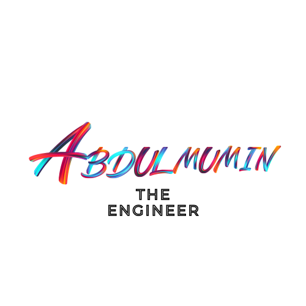

<header class="site-header">
    <!-- Left Side: Logo -->
    <a href="index.html" class="logo">
        
    </a>
    <!-- Right Side: Navigation Menu -->
    <!-- Navigation Menu -->
    <nav class="nav-links">
        <ul>
            <li><a href="about.html">About</a></li>
            <li><a href="portfolio.html">Portfolio</a></li>
            <li><a href="blog.html">Blog</a></li>
            <li><a href="contact.html">Contact</a></li>
            <!-- 🌙 Dark Mode Toggle -->
            <!-- Dark Mode Toggle Button -->
<li>
    <button id="dark-mode-toggle" class="mode-toggle">
        
    </button>
</li>

        </ul>
    </nav>

</header>
